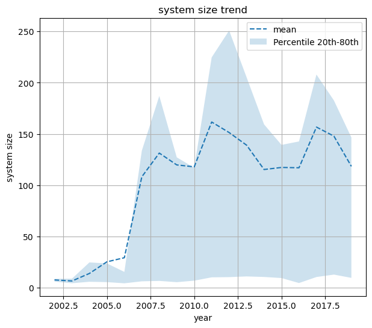
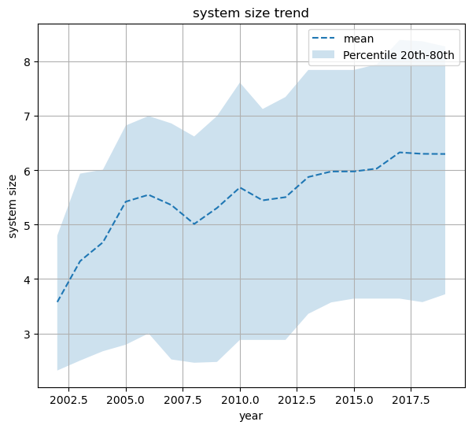

Sähkötehon kehitys
Sähkötehon kehitys#
import numpy as np
import pandas as pd
import matplotlib.pyplot as plt
import importlib.util
import sys
try:
import preprocessor as esik
except ModuleNotFoundError:
file_path = "../Tehtava-03/preprocessor.py"; module_name = "preprocessor"; spec = importlib.util.spec_from_file_location(module_name, file_path)
esik = importlib.util.module_from_spec(spec); sys.modules[module_name] = esik; spec.loader.exec_module(esik)
pd.options.display.max_columns = 999
pd.options.display.max_rows = 999
customer_segment = 'customer_segment_2'
cols = [customer_segment , 'year', 'system_size_DC']
df_all = esik.esik(cols)
df = df_all.copy()
df = df[(df[customer_segment].isin(['NON-RES']))]
df = df[(df['year'] > 2001)]
q_high = 0.8
q_low = 0.2
year_s = df.groupby(['year'])
trend_mean = year_s['system_size_DC'].mean()
trend_q_high = year_s['system_size_DC'].quantile(q_high).to_numpy().T
trend_q_low = year_s['system_size_DC'].quantile(q_low).to_numpy().T
#print(trend_q_high)
x = df['year'].unique()
x.sort(axis=0)
fig, ax = plt.subplots(figsize=(7, 6))
ax.plot(trend_mean, linestyle='--', label='mean')
ax.fill_between(x, trend_q_low, trend_q_high, alpha=0.22, label=f'Percentile {str(int(100*q_low))}th-{str(int(100*q_high))}th')
ax.legend()
plt.xlabel('year')
plt.ylabel('system size')
plt.title('system size trend')
plt.grid()
plt.show()

df = df_all.copy()
df = df[(df[customer_segment].isin(['RES']))]
df = df[(df['year'] > 2001)]
q_high = 0.8
q_low = 0.2
year_s = df.groupby(['year'])
trend_mean = year_s['system_size_DC'].mean()
trend_q_high = year_s['system_size_DC'].quantile(q_high).to_numpy().T
trend_q_low = year_s['system_size_DC'].quantile(q_low).to_numpy().T
#print(trend_q_high)
x = df['year'].unique()
x.sort(axis=0)
fig, ax = plt.subplots(figsize=(7, 6))
ax.plot(trend_mean, linestyle='--', label='mean')
ax.fill_between(x, trend_q_low, trend_q_high, alpha=0.22, label=f'Percentile {str(int(100*q_low))}th-{str(int(100*q_high))}th')
ax.legend()
plt.xlabel('year')
plt.ylabel('system size')
plt.title('system size trend')
plt.grid()
plt.show()
